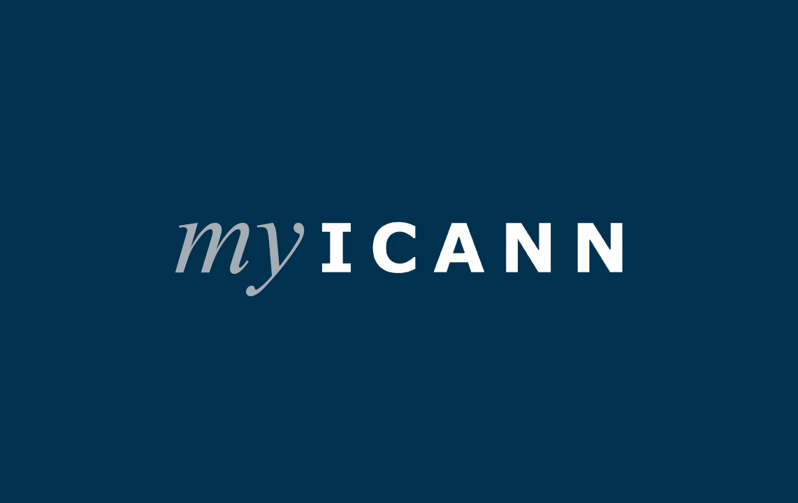
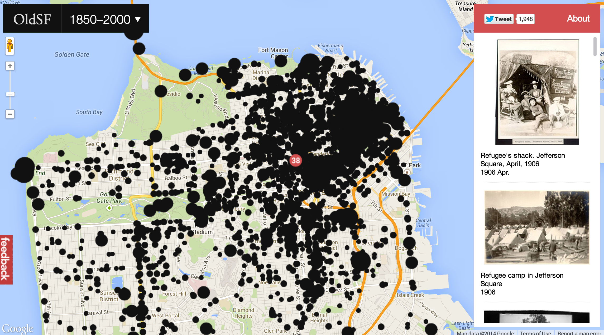
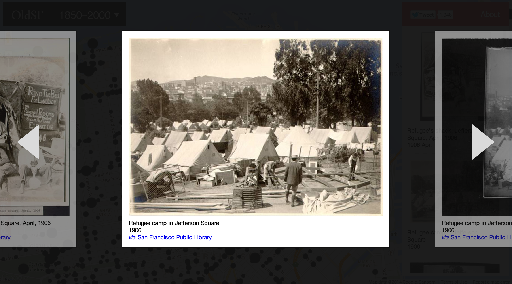

Raven
A platform for the DNS community
Research | Strategy | UX/UI Design

ICANN, the Internet Corporation for Assigned Names and Numbers, came to Neo (a consulting studio I worked for) with the primary objective of more deeply engaging community newcomers.
In collaboration with ICANN leadership, we kicked off the project with business and user need assumptions.
We launched ICANN Labs, a space for exploring solutions to various conversion, learning, discovery and communication bottlenecks. We did customer development and usability testing with new and established members of the community to iterate and revise our projects.
Over the course of ten months we built the new ICANN.org and continue to iterate on the site.
I was responsible for customer development research planning and facilitation and leading interaction design. I interfaced with the client on policy and public comment features and also contibuted to the styleguide as well as product, content writing and front-end development.
 My New logo for myICANN, the logged in and personalized ICANN experience
Rediscovering Old San Francisco
UX/UI Design | HTML/CSS
 A newspaper goes out of business in SF and donates their entire collection of newsworthy unpublished photos to the Public Library. They're online but there's no easy way to browse them. Enter: OldSF.org
I was responsible for designing, prototyping and writing a fair bit of the markup for OldSF.org.
Prototyping for Loyalty
Research | Strategy | UX/UI Design | Prototyping
In an industry that's become increasingly transparent, Priceline is struggling to maintain a loyal user base. I spent five months in-house with their Lab team to prototype and experiment with potential solutions to mobile and desktop user experience, conversion and loyalty challenges.

Moving the work pass process online
Research | Strategy | UX Design | Prototyping
Each year thousands of individuals move to Singapore for work. The government's application and renewal process was so poorly designed that a professional middleman emerged to interface between employers, employees and the goverment.
I spent five weeks in Singapore working with their work pass staff as well as designers and developers from IDEO and Thoughtworks. We took two year's worth of research and designed a prototype that we validated and iterated on with staff and target market customers.
Tools for instructing literacy
Research | Strategy | UX/UI Design | Prototyping
In a single classroom, some students are performing below level, some at level and some below. How do you teach a single lesson to such a wide range of levels? Studies show that skill-based differentiated instruction is incredibly effective, though it can be daunting for teachers.
I designed and conducted customer development research with our target market K-2 teachers to understand the complexities of differentiated instruction as well as existing solutions, hacks and emergent behaviour that could inform solution design. I put together clickable medium-fidelity mocks and iterated based on teacher feedback.

A Martketplace for pro bono
Research | Strategy | UX Design | Prototyping
For the first 15 years of its life, Taproot awarded a few non-profits a year with $75k grants and a team of highly skilled pro bono professionals who helped them with things like marketing, findraising, and website redesign. The brand was so strong that they had thousands of pro bono consultants lined up to be matched on a project. In their 16th year they decided to expand their offerings to match these queued consultants with non-profits who did receive a grants.
I co-facilitated the client kickoff workshop, designed and facilitated customer development research throughout the project, proposed the marketplace strategy and sketched out some of the main components of the initial user interface.
Visit Taproot+

Defining TFA online
Research
Teach for America places clever and ambitious college grads in mostly underpriviledged classrooms for two years of teaching. What does that experience look like and how can we improve it?
In the summer of 2014, I helped kick off a project around improving teacher onboarding, performance and support. I designed a research plan, put together a customer development guide and facilitated the first week of sessions to train the project's full-time designer.
Teaching
Design Mentor
Designlab
User Experience Design Instructor
General Assembly
Speaking
Customer Development at a Global Scale
LEAN CONF Manchester
Lean UX Meetup SF
Lean Eggs and Ham NYC